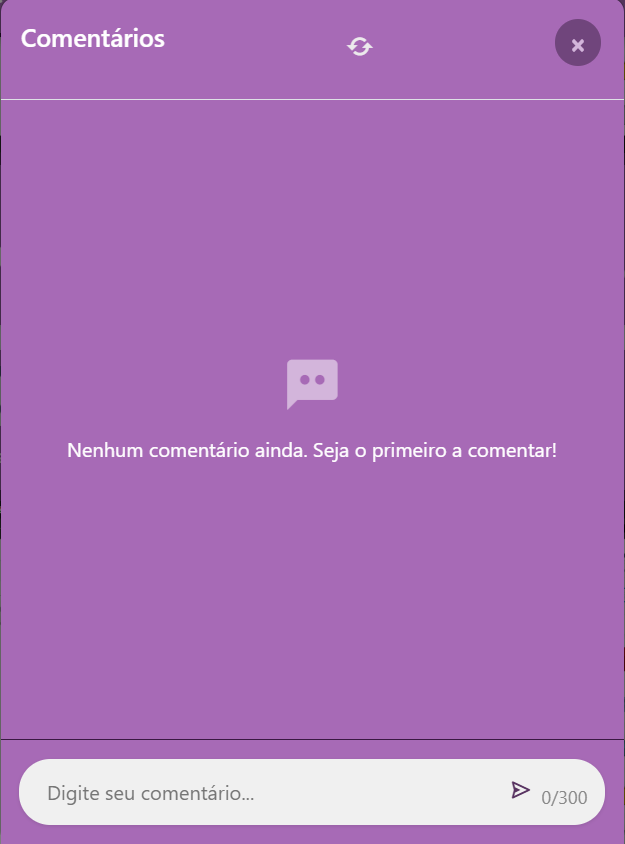

Voltar
Comentários em Posts
Como gerenciar comentários em publicações
Adicionar Comentários
1
Escrever um comentário
Para comentar em um post:
- Acesse a seção de comentários (como mostrado acima)
- Digite seu comentário no campo "Digite seu comentário"
- Use os ícones para adicionar emojis, texto
- Clique no icone para enviar seu comentário
2
Responder a comentários
Para responder a um comentário específico:
- Vá ate o comentário que deseja responder
- Clique no "Responder"
- Digite sua resposta e clique em enviar
- A resposta será aninhada abaixo do comentário original
Gerenciar Comentários
1
Excluir seus comentários
Para gerenciar seus próprios comentários:
- Localize seu comentário na publicação
- Clique no ícone de três pontos (⋮) no canto superior direito
- Selecione "Excluir" para remover
- Confirme a ação quando solicitado
Denunciar Comentários
1
Reportar comentários inadequados
Para denunciar um comentário que viola as regras:
- Vá ate o comentário ofensivo
- Clique no ícone de três pontos (⋮)
- Selecione "Denunciar"
- Escolha o motivo da denúncia e adicione detalhes se necessário
- Clique em "Enviar denúncia"
Perguntas Frequentes
Ainda com dúvidas?
Se precisar de ajuda adicional sobre comentários ou encontrou algum problema, entre em contato:
Visualizar Comentários
Acessando os comentários
Para ver os comentários de um post:
- Localize o post desejado em seu feed
- Clique no ícone de balão de fala ou em "Comentários"
- A seção de comentários será exibida na tela
